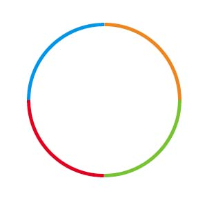
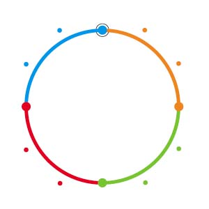

Understanding Contours and Segments
Now, this is an important part of RoboFab so pay attention. In the world of digital font formats we have several different kinds of ways of describing outlines. Bezier curves for PostScript fonts, Quadratic curves for TrueType fonts. Each with their own peculiarities. RoboFab is format agnostic so it should be able to store all postscript and all truetype points. The structure here is meant to be able to do all that.
Diagrams by Tal Leming.
Contours
A glyph can contain one or more contours. Depending on what you want to do, there are different ways of looking at the data of the contour, the points, the line segments. The RContour object is way to the outlines. A description of the RContour object.

# take a glyph (one with outlines obviously)
c = CurrentGlyph()
# get to contours by index:
print c[0]
< RContour for Mailer-Regular.a[0] >
15
# 15? 15 of what?
Segments
This circle consists of a couple of segments, each a piece of of the contour. A contour is a sequence of segments, you can iterate through a contour to get segments. A contour also has methods for adding and deleting segments.

# segment code example
In turn, a segment is made up of a sequence of points. Any number of off-curve points followed by an on-curve point. For the PostScript-centric designers: in TrueType outlines it is allowed to have any number of off-curve points before an on-curve. These points know whether they need to be rendered as bezier of quadratic curves. A description of the RSegment object.

Points
Another way to look at a contour is as a sequence of on-curve and off-curve points. This is the approach taken by glyph.drawPoints() and PointPen. A description of the RPoint object.

# get straight to the points in a contour through the points attribute
g = CurrentGlyph()
for aPt in g[0].points:
< RPoint for Special-Bold.A[0][0] >
< RPoint for Special-Bold[1][1] >
etc..
bPoints
This is another way to look at contours and its parts: bPoints behave very much like RoboFog points used to do. A point object has an incoming bcp, an on-curve ("anchor point" fog called it) and an outgoing bcp. This approach has been added for folks more at ease with the RoboFog structure. Note: if the contour contains series of off-curve points, bPoints won't help you. A description of the bPoint object.

# bpoints
c = CurrentGlyph()
for aPt in c[0].bPoints:
print aPt.anchor
print aPt.bcpIn
print aPt.bcpOut
print aPt.type
...
etc..